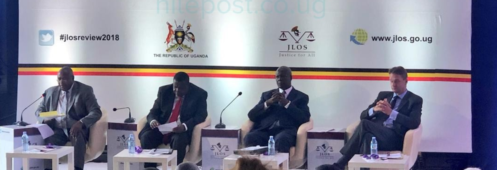

JLOS strengthens institutional accountability by promoting transparency, combating corruption, and ensuring that justice institutions are governed in line with constitutional principles and citizens' expectations. Uganda's corruption perception index has continued to improve, and the clearance rate of corruption cases by the Anti-Corruption Division (ACD) increased from 96% in 2016/17 to 97.7% in 2019.
The implementation of the Sub-programme anti-corruption strategy is largely on track. Efforts on asset recovery by the ODPP to restrain properties of officers implicated in corruption cases have intensified, with 7% of the value of proceeds of crimes recovered against a target of 20%. The Sector is committed to addressing the remaining gaps through automation, legislative reform, and expanded geographic reach of anti-corruption services.
Strengthening the Anti-Corruption Division to increase the clearance rate of corruption cases, de-concentrate ACD services to regional and up-country stations, and fast-track the enactment of relevant anti-corruption legislation.
Developing a comprehensive asset recovery framework to increase the proportion of proceeds of crime recovered. Efforts include restraining properties of implicated officers, addressing valuation bottlenecks, and strengthening ODPP capacity in asset recovery proceedings.
Promoting e-justice and digital systems to reduce discretion and opportunities for corruption, publishing annual performance reports for all member institutions, and supporting internal oversight mechanisms across JLOS institutions.
The recovery of 7% of proceeds of crime against a 20% target reflects ongoing challenges including ongoing valuation processes, the high cost of property valuation, and understaffing in the Government Valuation Department — all of which slow the asset recovery process.
Anti-corruption services remain concentrated in Kampala, limiting access for citizens and institutions in regional and up-country areas. De-concentration of the Anti-Corruption Division to regional level is a key priority.
The fast-tracking of relevant anti-corruption legislation remains outstanding. Strengthening the legal framework is essential to support both enforcement action and the development of a comprehensive asset recovery regime.
While e-justice systems have advanced, further automation of internal oversight and compliance processes is needed to reduce discretion, limit opportunities for corruption, and improve transparency across JLOS institutions.
Effective accountability requires coordinated action across institutions and sectors. JLOS welcomes collaboration from anti-corruption bodies, civil society, oversight institutions, development partners, and the private sector to advance transparency, integrity, and good governance in Uganda's justice sector.
Contact the Secretariat →